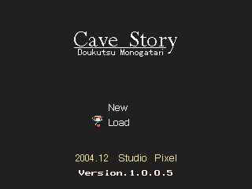

- Introduction -

Cave Story ~ Doukutsu Monogatari is a jumping-and-shooting action game.
Explore the caves until you reach the ending.
You can also save your game and continue from where you left off.
* System Requirements
- Microsoft Windows 98 / 2000 / XP
- DirectX 5 or later
* Other
- Gamepad support.
- Choose between full-screen and windowed mode.